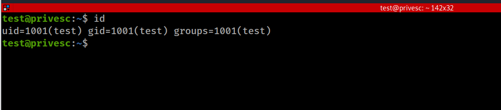
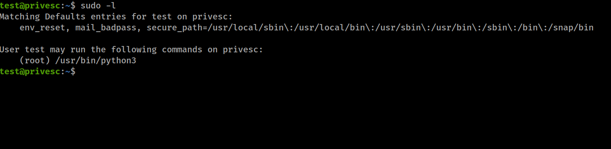
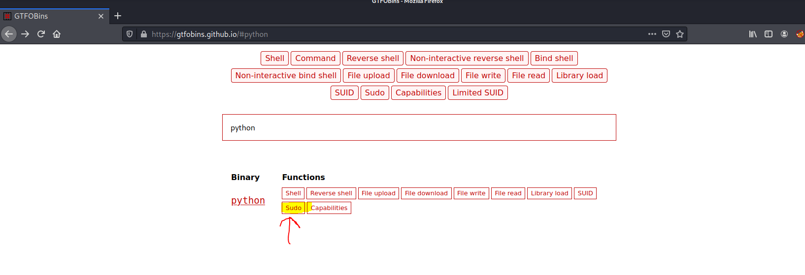
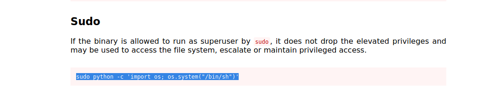
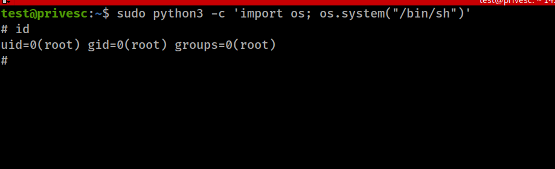

Introduction
In this article, I will explain another Linux privilege escalation technique that relies on Sudo. This is a continuation of the Sudo series, so if you have not read Part 1, make sure to review it before proceeding, as it covers the foundational concepts we build upon here.
Explanation
Initial Access as a Low-Privileged User
To begin, we are logged into the system as a low-privileged user called test. Our objective is to escalate privileges and execute commands as the root user, which holds the highest level of privilege on a Linux system.
Checking Sudo Permissions
Since this technique depends on Sudo, the first step is to check what sudo permissions are available to our current user by running:
sudo -l
After running this command, we observe that we have the ability to run Python with root privileges through sudo.

Key Difference from Part 1
This is where the distinction from Part 1 becomes important. In Part 1, we had permission to run a specific Python script file with root privileges. Here, the situation is different -- we can execute the Python binary itself with root privileges via sudo. This is a much more powerful position because it means we can run arbitrary Python code as root, not just a specific script.

Using GTFObins
Here is an important tip: whenever you discover that you can run a binary program with root privileges through sudo -- whether it is python, ruby, perl, curl, mysql, or any other binary -- you should immediately head to the GTFObins website.
GTFObins is an invaluable resource that provides a curated list of Unix binaries that can be exploited to bypass local security restrictions. For each binary, it shows you the exact commands you can run to obtain a root shell or escalate privileges.
Looking Up the Exploit
Navigate to the GTFObins website and type python in the search box. You will see that there is an exploitation technique listed for the Python binary under the Sudo category. This is exactly what we need, since we can run Python with root privileges via sudo.
Click on the Python entry and look for the Sudo section. It will provide the exact command to spawn a root shell.

The Exploitation Command
Copy the command from GTFObins and make one small modification: replace python with python3, because the system we are targeting has Python 3 installed rather than Python 2. The final command is:
sudo python3 -c 'import os; os.system("/bin/sh")'
This command does the following:
- sudo runs the command with root privileges
- python3 -c executes inline Python code
- import os; os.system("/bin/sh") imports the os module and spawns a new shell
Since the Python binary is running as root (thanks to sudo), the shell that gets spawned will also have root privileges.

Result
After executing the command, we successfully obtain a root shell. We now have the highest level of privilege on the system.
Summary
This technique demonstrates how dangerous it can be to grant sudo access to interpreter binaries like Python. Unlike Part 1 where we needed write access to a specific script file, here the mere ability to run the Python binary as root is enough to immediately escalate to a root shell. Always check GTFObins when you find sudo permissions on any binary during a penetration test -- it is one of the most useful resources for Linux privilege escalation.
